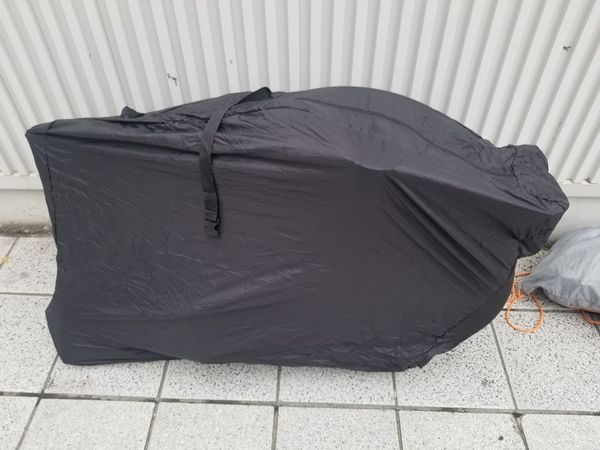
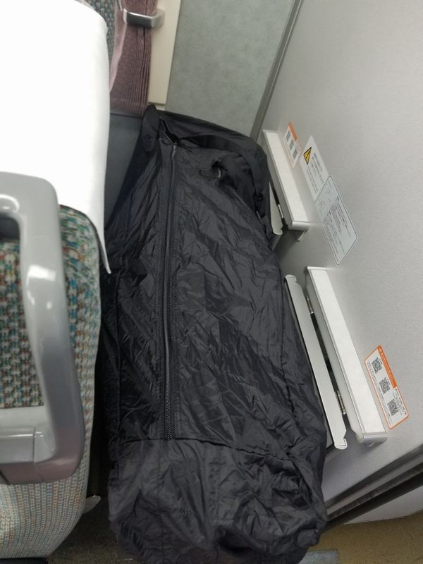
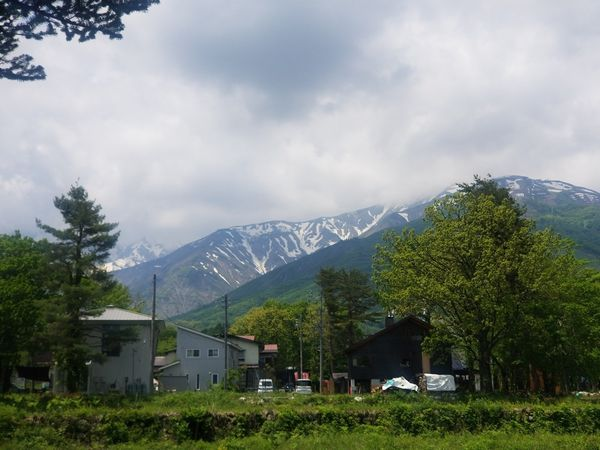

ロードバイク乗りのおっさんの日記 管理画面
記事タイトル：
セクション1
先日、アルプスあずみのセンチュリーライド(緑のAACR)に参加してきました。 これは私は以前にも参加していたのですが、コロナ禍で2年連続で中止となり、今回は３年ぶりの開催となりました。自粛ムードは世間でもすっかり緩んでいますが、新型コロナ感染者数で言えば今は２年前よりも去年よりも多いので、今年開催すること、それに参加することには異論もあると思います。しかし、このイベントは私にとっては大変楽しいイベントで、我慢ができなかった、というのが正直なところです。 前回参加した時の内容はこちら。 イベント自体は5/22の日曜ですが、出走が05:30ですし受付は前日なので、土曜のうちに移動します。名古屋駅で輪行袋に自転車を詰めてしなの７号で松本まで。


画像をアップロード：
セクション2
以下、風景です。正直今回、写真ポイントにおける参加者のマナーが悪すぎて、あれに混じるのも嫌だなあ、と思ったのであまり撮っていません。白馬エイドで撮ればいいやと思っていたのに今回場所が違ってたしな。

画像をアップロード：
セクションの追加
下書き保存する
公開する
最新記事
2022/05/30 緑のAACR 2022に参加してきました
2020/10/18 ロードバイクは結局時速何kmぐらいで走れるのか
2020/10/05 自転車乗りなので所有する自転車について語ってみる その2
2020/09/23 自転車乗りなので所有する自転車について語ってみる その1
2019/09/23 しまなみ海道にリベンジに行きました。今度こそ。(往復編)